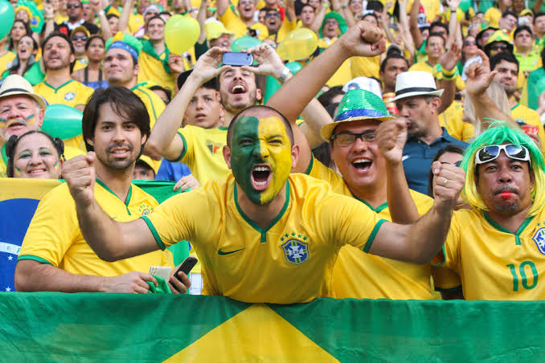
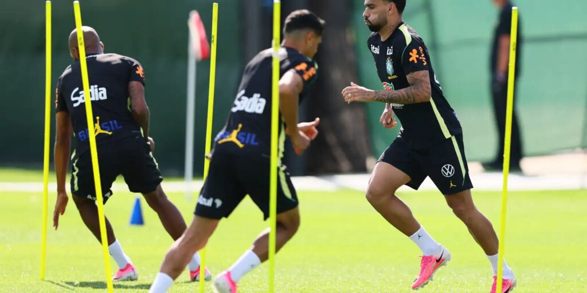
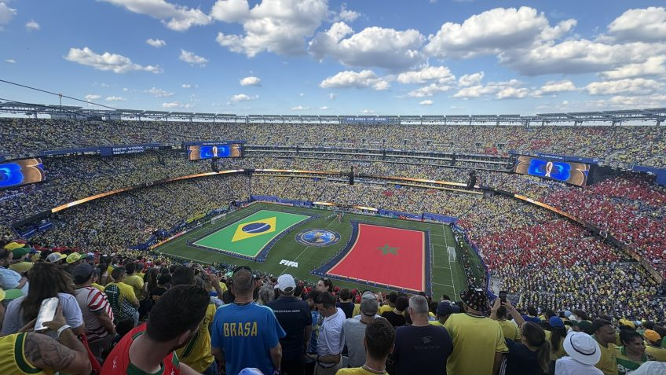
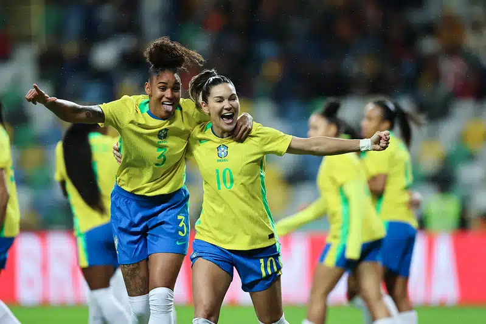
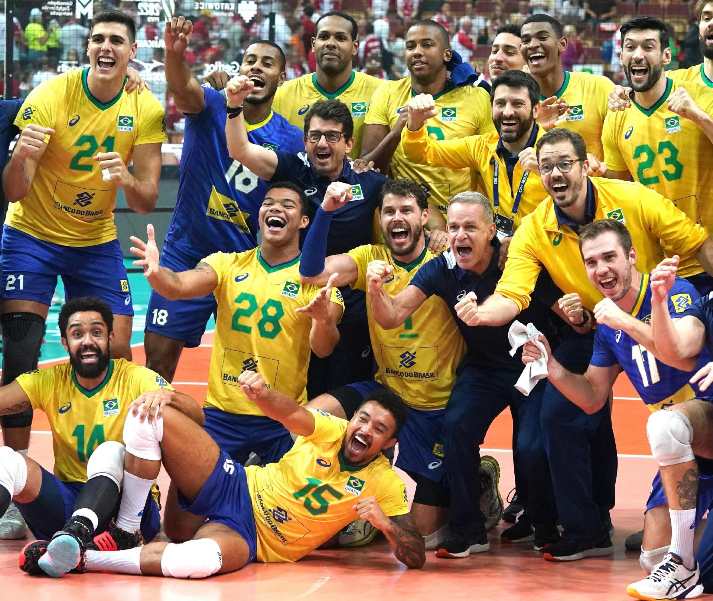

Torcida brasileira mantém confiança na Seleção
Mesmo após o empate na estreia, torcedores acreditam em uma boa campanha do Brasil.
Ler mais
Brasil intensifica treinamentos antes do confronto contra o Haiti
Comissão técnica realiza ajustes para buscar os três pontos na próxima rodada.
Ler mais
Copa do Mundo 2026 registra grande público nos estádios
A competição tem atraído milhares de torcedores de diferentes países.
Ler mais
Jogadores destacam importância da próxima partida
Atletas afirmam que uma vitória pode aproximar o Brasil da classificação.
Ler mais
Futebol feminino brasileiro segue em crescimento
Clubes e seleções continuam recebendo investimentos e conquistando espaço.
Ler mais
Seleção de vôlei conquista importante vitória internacional
O Brasil segue como uma das principais potências da modalidade.
Ler mais